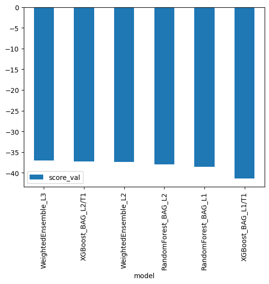

# create the .kaggle directory and an empty kaggle.json file
!mkdir -p /root/.kaggle
!touch /root/.kaggle/kaggle.json
!chmod 600 /root/.kaggle/kaggle.jsonPredict Bike Sharing Demand with AutoGluon (cont.)
Notes:
I ran the notebook in Google Colab so I need to install packages again each time. The notebook is meant to complement the main one, addressing the things that I have not implemented. The first steps will be relatively the same.
# Fill in your user name and key from creating the kaggle account and API token file
import json
kaggle_username = ""
kaggle_key = ""
# Save API token the kaggle.json file
with open("/root/.kaggle/kaggle.json", "w") as f:
f.write(json.dumps({"username": kaggle_username, "key": kaggle_key}))%%capture
!pip install -U pip
!pip install -U setuptools wheel
!pip install -U "mxnet<2.0.0" bokeh==2.0.1
!pip install autogluon --no-cache-dir# Download the dataset, it will be in a .zip file so you'll need to unzip it as well.
!kaggle competitions download -c bike-sharing-demand
# If you already downloaded it you can use the -o command to overwrite the file
!unzip -o bike-sharing-demand.zipDownloading bike-sharing-demand.zip to /content
0% 0.00/189k [00:00<?, ?B/s]
100% 189k/189k [00:00<00:00, 74.7MB/s]
Archive: bike-sharing-demand.zip
inflating: sampleSubmission.csv
inflating: test.csv
inflating: train.csv import pandas as pd
from autogluon.tabular import TabularPredictor# Create the train dataset in pandas by reading the csv
# Set the parsing of the datetime column so you can use some of the `dt` features in pandas later
train = pd.read_csv('train.csv', parse_dates=['datetime'])
train.loc[:,'season':'weather'] = train.loc[:,'season':'weather'].astype('category')
train.head()| datetime | season | holiday | workingday | weather | temp | atemp | humidity | windspeed | casual | registered | count | |
|---|---|---|---|---|---|---|---|---|---|---|---|---|
| 0 | 2011-01-01 00:00:00 | 1 | 0 | 0 | 1 | 9.84 | 14.395 | 81 | 0.0 | 3 | 13 | 16 |
| 1 | 2011-01-01 01:00:00 | 1 | 0 | 0 | 1 | 9.02 | 13.635 | 80 | 0.0 | 8 | 32 | 40 |
| 2 | 2011-01-01 02:00:00 | 1 | 0 | 0 | 1 | 9.02 | 13.635 | 80 | 0.0 | 5 | 27 | 32 |
| 3 | 2011-01-01 03:00:00 | 1 | 0 | 0 | 1 | 9.84 | 14.395 | 75 | 0.0 | 3 | 10 | 13 |
| 4 | 2011-01-01 04:00:00 | 1 | 0 | 0 | 1 | 9.84 | 14.395 | 75 | 0.0 | 0 | 1 | 1 |
train.info()<class 'pandas.core.frame.DataFrame'>
RangeIndex: 10886 entries, 0 to 10885
Data columns (total 12 columns):
# Column Non-Null Count Dtype
--- ------ -------------- -----
0 datetime 10886 non-null datetime64[ns]
1 season 10886 non-null category
2 holiday 10886 non-null category
3 workingday 10886 non-null category
4 weather 10886 non-null category
5 temp 10886 non-null float64
6 atemp 10886 non-null float64
7 humidity 10886 non-null int64
8 windspeed 10886 non-null float64
9 casual 10886 non-null int64
10 registered 10886 non-null int64
11 count 10886 non-null int64
dtypes: category(4), datetime64[ns](1), float64(3), int64(4)
memory usage: 723.7 KB# Simple output of the train dataset to view some of the min/max/varition of the dataset features.
train.describe()| temp | atemp | humidity | windspeed | casual | registered | count | |
|---|---|---|---|---|---|---|---|
| count | 10886.00000 | 10886.000000 | 10886.000000 | 10886.000000 | 10886.000000 | 10886.000000 | 10886.000000 |
| mean | 20.23086 | 23.655084 | 61.886460 | 12.799395 | 36.021955 | 155.552177 | 191.574132 |
| std | 7.79159 | 8.474601 | 19.245033 | 8.164537 | 49.960477 | 151.039033 | 181.144454 |
| min | 0.82000 | 0.760000 | 0.000000 | 0.000000 | 0.000000 | 0.000000 | 1.000000 |
| 25% | 13.94000 | 16.665000 | 47.000000 | 7.001500 | 4.000000 | 36.000000 | 42.000000 |
| 50% | 20.50000 | 24.240000 | 62.000000 | 12.998000 | 17.000000 | 118.000000 | 145.000000 |
| 75% | 26.24000 | 31.060000 | 77.000000 | 16.997900 | 49.000000 | 222.000000 | 284.000000 |
| max | 41.00000 | 45.455000 | 100.000000 | 56.996900 | 367.000000 | 886.000000 | 977.000000 |
# Create the test pandas dataframe in pandas by reading the csv, remember to parse the datetime!
test = pd.read_csv('test.csv')
test.loc[:,'datetime'] = pd.to_datetime(test.loc[:,'datetime'])
test.loc[:,'season':'weather'] = test.loc[:,'season':'weather'].astype('category')
test.head()DeprecationWarning: In a future version, `df.iloc[:, i] = newvals` will attempt to set the values inplace instead of always setting a new array. To retain the old behavior, use either `df[df.columns[i]] = newvals` or, if columns are non-unique, `df.isetitem(i, newvals)`
test.loc[:,'datetime'] = pd.to_datetime(test.loc[:,'datetime'])| datetime | season | holiday | workingday | weather | temp | atemp | humidity | windspeed | |
|---|---|---|---|---|---|---|---|---|---|
| 0 | 2011-01-20 00:00:00 | 1 | 0 | 1 | 1 | 10.66 | 11.365 | 56 | 26.0027 |
| 1 | 2011-01-20 01:00:00 | 1 | 0 | 1 | 1 | 10.66 | 13.635 | 56 | 0.0000 |
| 2 | 2011-01-20 02:00:00 | 1 | 0 | 1 | 1 | 10.66 | 13.635 | 56 | 0.0000 |
| 3 | 2011-01-20 03:00:00 | 1 | 0 | 1 | 1 | 10.66 | 12.880 | 56 | 11.0014 |
| 4 | 2011-01-20 04:00:00 | 1 | 0 | 1 | 1 | 10.66 | 12.880 | 56 | 11.0014 |
test.info()<class 'pandas.core.frame.DataFrame'>
RangeIndex: 6493 entries, 0 to 6492
Data columns (total 9 columns):
# Column Non-Null Count Dtype
--- ------ -------------- -----
0 datetime 6493 non-null datetime64[ns]
1 season 6493 non-null category
2 holiday 6493 non-null category
3 workingday 6493 non-null category
4 weather 6493 non-null category
5 temp 6493 non-null float64
6 atemp 6493 non-null float64
7 humidity 6493 non-null int64
8 windspeed 6493 non-null float64
dtypes: category(4), datetime64[ns](1), float64(3), int64(1)
memory usage: 279.8 KB# Same thing as train and test dataset
submission = pd.read_csv('sampleSubmission.csv', parse_dates=['datetime'])
submission.head()| datetime | count | |
|---|---|---|
| 0 | 2011-01-20 00:00:00 | 0 |
| 1 | 2011-01-20 01:00:00 | 0 |
| 2 | 2011-01-20 02:00:00 | 0 |
| 3 | 2011-01-20 03:00:00 | 0 |
| 4 | 2011-01-20 04:00:00 | 0 |
submission.info()<class 'pandas.core.frame.DataFrame'>
RangeIndex: 6493 entries, 0 to 6492
Data columns (total 2 columns):
# Column Non-Null Count Dtype
--- ------ -------------- -----
0 datetime 6493 non-null datetime64[ns]
1 count 6493 non-null int64
dtypes: datetime64[ns](1), int64(1)
memory usage: 101.6 KB# create a new feature
train['hour'] = train.datetime.dt.hour
test['hour'] = test.datetime.dt.hourStep 3: Train a model using AutoGluon’s Tabular Prediction
Requirements: * We are prediting count, so it is the label we are setting. * Ignore casual and registered columns as they are also not present in the test dataset. * Use the root_mean_squared_error as the metric to use for evaluation. * Set a time limit of 10 minutes (600 seconds). * Use the preset best_quality to focus on creating the best model.
xgb_options = {'booster':'dart', 'eta':'0.1'}
rf_options = {'n_estimators':200}
time_limit = 900
num_trials = 5
search_strategy = 'auto'
hyperparameter_tune_kwargs = {
'num_trials': num_trials,
'scheduler' : 'local',
'searcher': search_strategy,
}predictor = TabularPredictor(label='count',
problem_type='regression',
eval_metric='root_mean_squared_error',
learner_kwargs = {'ignored_columns': ['casual', 'registered']}
).fit(train_data=train,
time_limit=600,
hyperparameters={'XGB': xgb_options,
'RF': rf_options},
hyperparameter_tune_kwargs=hyperparameter_tune_kwargs,
presets="best_quality")No path specified. Models will be saved in: "AutogluonModels/ag-20230529_100130/"
Presets specified: ['best_quality']
Warning: hyperparameter tuning is currently experimental and may cause the process to hang.
Stack configuration (auto_stack=True): num_stack_levels=1, num_bag_folds=8, num_bag_sets=20
Beginning AutoGluon training ... Time limit = 600s
AutoGluon will save models to "AutogluonModels/ag-20230529_100130/"
AutoGluon Version: 0.7.0
Python Version: 3.10.11
Operating System: Linux
Platform Machine: x86_64
Platform Version: #1 SMP Sat Apr 29 09:15:28 UTC 2023
Train Data Rows: 10886
Train Data Columns: 12
Label Column: count
Preprocessing data ...
Using Feature Generators to preprocess the data ...
Dropping user-specified ignored columns: ['casual', 'registered']
Fitting AutoMLPipelineFeatureGenerator...
Available Memory: 11713.5 MB
Train Data (Original) Memory Usage: 0.57 MB (0.0% of available memory)
Inferring data type of each feature based on column values. Set feature_metadata_in to manually specify special dtypes of the features.
Stage 1 Generators:
Fitting AsTypeFeatureGenerator...
Note: Converting 2 features to boolean dtype as they only contain 2 unique values.
Stage 2 Generators:
Fitting FillNaFeatureGenerator...
Stage 3 Generators:
Fitting IdentityFeatureGenerator...
Fitting CategoryFeatureGenerator...
Fitting CategoryMemoryMinimizeFeatureGenerator...
Fitting DatetimeFeatureGenerator...
Stage 4 Generators:
Fitting DropUniqueFeatureGenerator...
Types of features in original data (raw dtype, special dtypes):
('category', []) : 4 | ['season', 'holiday', 'workingday', 'weather']
('datetime', []) : 1 | ['datetime']
('float', []) : 3 | ['temp', 'atemp', 'windspeed']
('int', []) : 2 | ['humidity', 'hour']
Types of features in processed data (raw dtype, special dtypes):
('category', []) : 2 | ['season', 'weather']
('float', []) : 3 | ['temp', 'atemp', 'windspeed']
('int', []) : 2 | ['humidity', 'hour']
('int', ['bool']) : 2 | ['holiday', 'workingday']
('int', ['datetime_as_int']) : 5 | ['datetime', 'datetime.year', 'datetime.month', 'datetime.day', 'datetime.dayofweek']
0.1s = Fit runtime
10 features in original data used to generate 14 features in processed data.
Train Data (Processed) Memory Usage: 0.92 MB (0.0% of available memory)
Data preprocessing and feature engineering runtime = 0.17s ...
AutoGluon will gauge predictive performance using evaluation metric: 'root_mean_squared_error'
This metric's sign has been flipped to adhere to being higher_is_better. The metric score can be multiplied by -1 to get the metric value.
To change this, specify the eval_metric parameter of Predictor()
AutoGluon will fit 2 stack levels (L1 to L2) ...
Fitting 2 L1 models ...
Hyperparameter tuning model: RandomForest_BAG_L1 ... Tuning model for up to 179.9s of the 599.81s of remaining time.
No hyperparameter search space specified for RandomForest_BAG_L1. Skipping HPO. Will train one model based on the provided hyperparameters.
Fitted model: RandomForest_BAG_L1 ...
-38.5597 = Validation score (-root_mean_squared_error)
7.09s = Training runtime
0.01s = Validation runtime
Hyperparameter tuning model: XGBoost_BAG_L1 ... Tuning model for up to 179.9s of the 592.68s of remaining time.
Fitting 8 child models (S1F1 - S1F8) | Fitting with ParallelLocalFoldFittingStrategy
Stopping HPO to satisfy time limit...
Fitted model: XGBoost_BAG_L1/T1 ...
-41.3214 = Validation score (-root_mean_squared_error)
169.67s = Training runtime
0.0s = Validation runtime
Completed 1/20 k-fold bagging repeats ...
Fitting model: WeightedEnsemble_L2 ... Training model for up to 360.0s of the 422.93s of remaining time.
-37.3166 = Validation score (-root_mean_squared_error)
0.29s = Training runtime
0.0s = Validation runtime
Fitting 2 L2 models ...
Hyperparameter tuning model: RandomForest_BAG_L2 ... Tuning model for up to 190.17s of the 422.59s of remaining time.
No hyperparameter search space specified for RandomForest_BAG_L2. Skipping HPO. Will train one model based on the provided hyperparameters.
Fitted model: RandomForest_BAG_L2 ...
-37.9708 = Validation score (-root_mean_squared_error)
17.81s = Training runtime
0.0s = Validation runtime
Hyperparameter tuning model: XGBoost_BAG_L2 ... Tuning model for up to 190.17s of the 404.71s of remaining time.
Fitting 8 child models (S1F1 - S1F8) | Fitting with ParallelLocalFoldFittingStrategy
Stopping HPO to satisfy time limit...
Fitted model: XGBoost_BAG_L2/T1 ...
-37.2291 = Validation score (-root_mean_squared_error)
162.3s = Training runtime
0.0s = Validation runtime
Completed 1/20 k-fold bagging repeats ...
Fitting model: WeightedEnsemble_L3 ... Training model for up to 360.0s of the 242.33s of remaining time.
-37.0635 = Validation score (-root_mean_squared_error)
0.15s = Training runtime
0.0s = Validation runtime
AutoGluon training complete, total runtime = 357.85s ... Best model: "WeightedEnsemble_L3"
TabularPredictor saved. To load, use: predictor = TabularPredictor.load("AutogluonModels/ag-20230529_100130/")predictor.fit_summary(show_plot=True)*** Summary of fit() ***
Estimated performance of each model:
model score_val pred_time_val fit_time pred_time_val_marginal fit_time_marginal stack_level can_infer fit_order
0 WeightedEnsemble_L3 -37.063491 0.012429 357.022567 0.000674 0.150200 3 True 6
1 XGBoost_BAG_L2/T1 -37.229063 0.011516 339.061054 0.000124 162.295944 2 True 5
2 WeightedEnsemble_L2 -37.316590 0.015952 177.058399 0.004560 0.293289 2 True 3
3 RandomForest_BAG_L2 -37.970848 0.011631 194.576422 0.000239 17.811313 2 True 4
4 RandomForest_BAG_L1 -38.559736 0.011225 7.091160 0.011225 7.091160 1 True 1
5 XGBoost_BAG_L1/T1 -41.321412 0.000167 169.673949 0.000167 169.673949 1 True 2
Number of models trained: 6
Types of models trained:
{'WeightedEnsembleModel', 'StackerEnsembleModel_RF', 'StackerEnsembleModel_XGBoost'}
Bagging used: True (with 8 folds)
Multi-layer stack-ensembling used: True (with 3 levels)
Feature Metadata (Processed):
(raw dtype, special dtypes):
('category', []) : 2 | ['season', 'weather']
('float', []) : 3 | ['temp', 'atemp', 'windspeed']
('int', []) : 2 | ['humidity', 'hour']
('int', ['bool']) : 2 | ['holiday', 'workingday']
('int', ['datetime_as_int']) : 5 | ['datetime', 'datetime.year', 'datetime.month', 'datetime.day', 'datetime.dayofweek']
*** End of fit() summary ***/usr/local/lib/python3.10/dist-packages/autogluon/core/utils/plots.py:138: UserWarning: AutoGluon summary plots cannot be created because bokeh is not installed. To see plots, please do: "pip install bokeh==2.0.1"
warnings.warn('AutoGluon summary plots cannot be created because bokeh is not installed. To see plots, please do: "pip install bokeh==2.0.1"'){'model_types': {'RandomForest_BAG_L1': 'StackerEnsembleModel_RF',
'XGBoost_BAG_L1/T1': 'StackerEnsembleModel_XGBoost',
'WeightedEnsemble_L2': 'WeightedEnsembleModel',
'RandomForest_BAG_L2': 'StackerEnsembleModel_RF',
'XGBoost_BAG_L2/T1': 'StackerEnsembleModel_XGBoost',
'WeightedEnsemble_L3': 'WeightedEnsembleModel'},
'model_performance': {'RandomForest_BAG_L1': -38.55973590917933,
'XGBoost_BAG_L1/T1': -41.321411554615295,
'WeightedEnsemble_L2': -37.31658982258544,
'RandomForest_BAG_L2': -37.97084772569969,
'XGBoost_BAG_L2/T1': -37.22906323655433,
'WeightedEnsemble_L3': -37.06349085462143},
'model_best': 'WeightedEnsemble_L3',
'model_paths': {'RandomForest_BAG_L1': 'AutogluonModels/ag-20230529_100130/models/RandomForest_BAG_L1/',
'XGBoost_BAG_L1/T1': '/content/AutogluonModels/ag-20230529_100130/models/XGBoost_BAG_L1/T1/',
'WeightedEnsemble_L2': 'AutogluonModels/ag-20230529_100130/models/WeightedEnsemble_L2/',
'RandomForest_BAG_L2': 'AutogluonModels/ag-20230529_100130/models/RandomForest_BAG_L2/',
'XGBoost_BAG_L2/T1': '/content/AutogluonModels/ag-20230529_100130/models/XGBoost_BAG_L2/T1/',
'WeightedEnsemble_L3': 'AutogluonModels/ag-20230529_100130/models/WeightedEnsemble_L3/'},
'model_fit_times': {'RandomForest_BAG_L1': 7.091159820556641,
'XGBoost_BAG_L1/T1': 169.67394948005676,
'WeightedEnsemble_L2': 0.2932894229888916,
'RandomForest_BAG_L2': 17.811312913894653,
'XGBoost_BAG_L2/T1': 162.29594445228577,
'WeightedEnsemble_L3': 0.15020036697387695},
'model_pred_times': {'RandomForest_BAG_L1': 0.011225223541259766,
'XGBoost_BAG_L1/T1': 0.00016689300537109375,
'WeightedEnsemble_L2': 0.004559755325317383,
'RandomForest_BAG_L2': 0.00023937225341796875,
'XGBoost_BAG_L2/T1': 0.00012373924255371094,
'WeightedEnsemble_L3': 0.0006740093231201172},
'num_bag_folds': 8,
'max_stack_level': 3,
'model_hyperparams': {'RandomForest_BAG_L1': {'use_orig_features': True,
'max_base_models': 25,
'max_base_models_per_type': 5,
'save_bag_folds': True,
'use_child_oof': True},
'XGBoost_BAG_L1/T1': {'use_orig_features': True,
'max_base_models': 25,
'max_base_models_per_type': 5,
'save_bag_folds': True},
'WeightedEnsemble_L2': {'use_orig_features': False,
'max_base_models': 25,
'max_base_models_per_type': 5,
'save_bag_folds': True},
'RandomForest_BAG_L2': {'use_orig_features': True,
'max_base_models': 25,
'max_base_models_per_type': 5,
'save_bag_folds': True,
'use_child_oof': True},
'XGBoost_BAG_L2/T1': {'use_orig_features': True,
'max_base_models': 25,
'max_base_models_per_type': 5,
'save_bag_folds': True},
'WeightedEnsemble_L3': {'use_orig_features': False,
'max_base_models': 25,
'max_base_models_per_type': 5,
'save_bag_folds': True}},
'leaderboard': model score_val pred_time_val fit_time \
0 WeightedEnsemble_L3 -37.063491 0.012429 357.022567
1 XGBoost_BAG_L2/T1 -37.229063 0.011516 339.061054
2 WeightedEnsemble_L2 -37.316590 0.015952 177.058399
3 RandomForest_BAG_L2 -37.970848 0.011631 194.576422
4 RandomForest_BAG_L1 -38.559736 0.011225 7.091160
5 XGBoost_BAG_L1/T1 -41.321412 0.000167 169.673949
pred_time_val_marginal fit_time_marginal stack_level can_infer \
0 0.000674 0.150200 3 True
1 0.000124 162.295944 2 True
2 0.004560 0.293289 2 True
3 0.000239 17.811313 2 True
4 0.011225 7.091160 1 True
5 0.000167 169.673949 1 True
fit_order
0 6
1 5
2 3
3 4
4 1
5 2 }predictor.leaderboard(silent=True).plot(kind="bar", x="model", y="score_val")<Axes: xlabel='model'>
Create predictions from test dataset
predictions = predictor.predict(test)
predictions.head()0 11.740690
1 5.859677
2 3.744877
3 3.270157
4 3.282072
Name: count, dtype: float32NOTE: Kaggle will reject the submission if we don’t set everything to be > 0.
# Describe the `predictions` series to see if there are any negative values
predictions.describe()count 6493.000000
mean 191.836212
std 173.315659
min 2.832216
25% 47.614754
50% 150.358307
75% 282.785278
max 886.419189
Name: count, dtype: float64# How many negative values do we have?
predictions.lt(0).sum()0# Set them to zero
predictions[predictions.lt(0)] = 0
predictions.head()0 11.740690
1 5.859677
2 3.744877
3 3.270157
4 3.282072
Name: count, dtype: float32predictions.lt(0).sum()0Set predictions to submission dataframe, save, and submit
submission["count"] = predictions
submission.to_csv("submission.csv", index=False)!kaggle competitions submit -c bike-sharing-demand -f submission.csv -m "added hyperparameters submission"100% 188k/188k [00:00<00:00, 333kB/s]
Successfully submitted to Bike Sharing DemandView submission via the command line or in the web browser under the competition’s page - My Submissions
!kaggle competitions submissions -c bike-sharing-demand | tail -n +1 | head -n 6fileName date description status publicScore privateScore
--------------------------- ------------------- -------------------------------------- -------- ----------- ------------
submission.csv 2023-05-29 10:07:32 added hyperparameters submission complete 0.45699 0.45699
submission.csv 2023-05-27 02:17:27 gradient boosting with GridSearchCV complete 0.38863 0.38863
submission_new_hpo_1.csv 2023-05-26 08:41:56 new features with increased time limit complete 0.67834 0.67834
submission_new_hpo.csv 2023-05-26 08:19:14 new features with hyperparameters complete 0.61537 0.61537